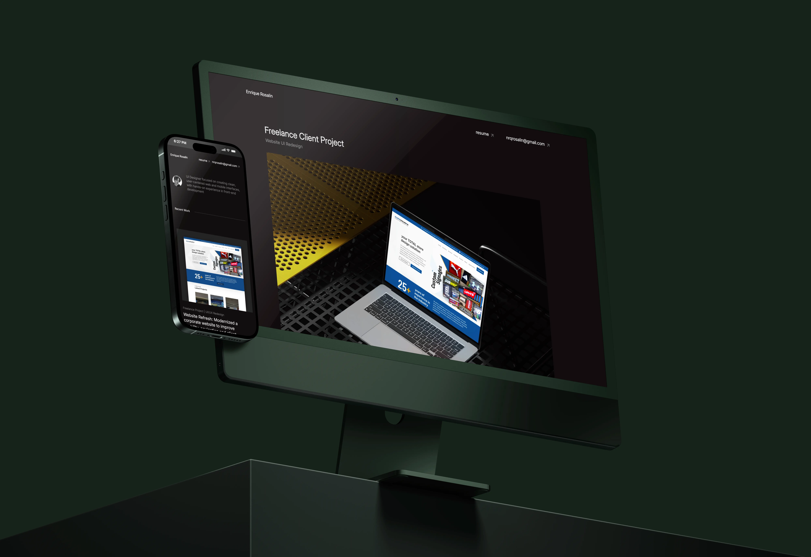
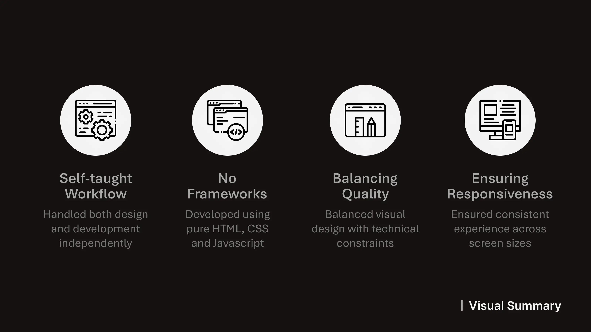
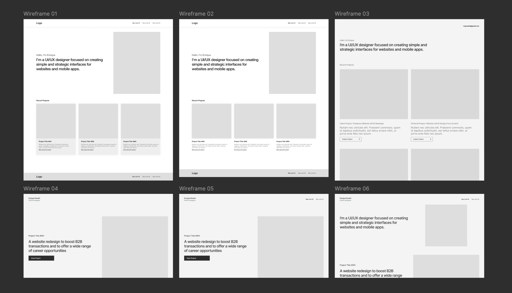
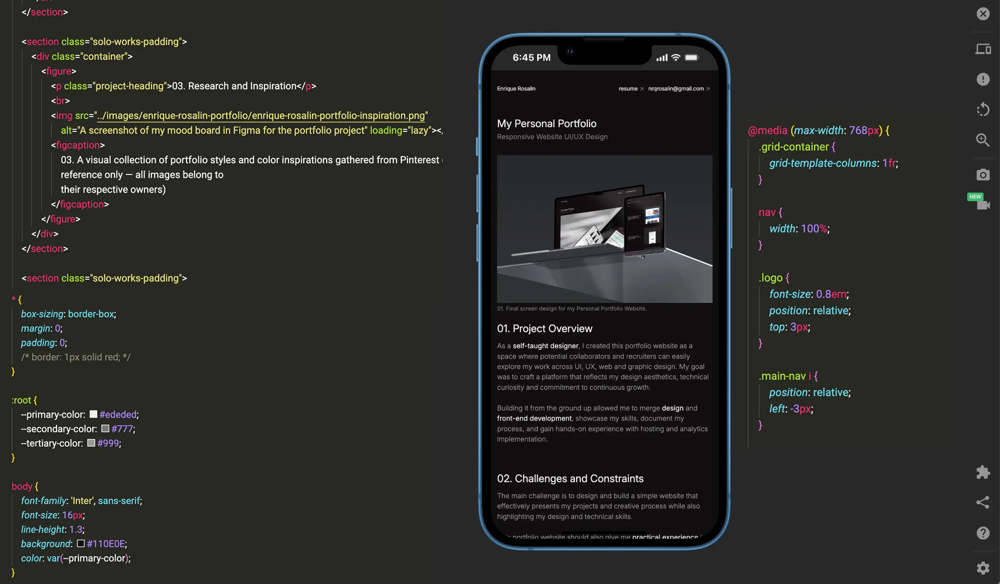

My Personal Portfolio
Responsive Website UI/UX Design

01. Project Overview
As a self-taught designer, I created this portfolio website as a
space where potential collaborators
and recruiters can
easily explore my work across UI, UX, web and graphic design. My goal was to craft a platform
that
reflects my design
aesthetics, technical curiosity and commitment to continuous growth.
Building it from the ground up
allowed me to merge
design and front-end development,
showcase my skills, document my process, and gain hands-on
experience with hosting and
analytics implementation.
02. Challenges and Constraints
The main challenge is to design and build a simple website that effectively presents my
projects
and creative process while also highlighting my design and technical skills.
This portfolio website should also give me practical
experience in hosting and user engagement tracking, areas in which I currently
have
no prior
solo
experience.
03. Research and Inspiration

I spent some time browsing portfolios of designers in different industries through Pinterest and Dribbble. I noticed they all had one thing in common: they didn't just show the 'pretty' final results, they told a story. So, I decided to use a single-page layout for my home screen to keep the friction low. Everything on a single scroll.
04. Sketches and Wireframes

Using pen and paper, I started sketching layout ideas and content flow. Once I was satisfied with my initial ideas, I moved into Figma to create wireframes, refining structure and getting a general feel for the layout.
05. Implementation and Testing

I hand-coded the website with HTML, CSS and some basic JavaScript using VSCode. I structured my CSS with clear sections for layout, typography and color variables to keep it scalable and systemized.
06. The Complete Design
The final portfolio design focuses on clarity with simple navigation, neutral colors and typography. It features a hero section with a short introduction and call-to-action links, followed by a projects gallery linking to detailed case studies.
Built from scratch, the site is fully responsive, fast-loading with real-time visitor tracking to evaluate user experience.
07. Learnings and Reflections
This portfolio project pushed me to bridge the gap between design and development. I learned how to implement design in code, use analytics tools for UX insights and manage version control and host on GitHub Pages.
I also learned from this project that my portfolio is a living design experiment, something I can keep refining as my skills and experience grow.
I also plan to improve accessibility features, further optimize performance and experiment with motion design using lightweight JavaScript libraries.
Other Works

Freelance Project | UI/UX Redesign
Website Refresh: Modernized a corporate website to improve usability, navigation and client conversion
Explore Project
Concept Project | UI/UX Design
Created a skincare experience through a companion app that connects assessments, routines and product tracking
Explore Project